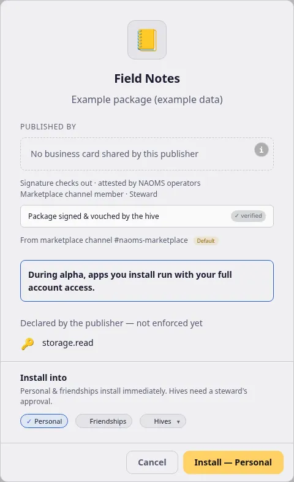

The install card now says where a package came from
Before you install, the card names the publisher and whether the signature checks out, and for a package offered through a channel it also says which channel and whether you have vouched for it.
Installing software is a trust decision made in a few seconds, on one small card. This post is about what that card now tells you.
![The install card for a sample package called "Field Notes" (description "Example package (example data)") in the light theme. Under the heading "Published by" is the publisher's business card, drawn as a blue-to-teal gradient card: a header "Publisher · Steward of the marketplace channel", the initials "ES" as the avatar, the name "Example Studio (example data)" and the tagline "Example open-source software studio". Its rows read Location Amsterdam, NL; Email hello@example-studio.example; Phone +31 20 555 0100; Friends Not shared; Address 1 Example Street, 1011 AA Amsterdam; Website https://example-studio.example. Below the card, in small italic text: "Shared by the publisher about themselves — not checked by NAOMS", then a thin rule, then "Signature checks out · attested by NAOMS operators", "Marketplace channel member · Steward", a box "Package signed & vouched by the hive" with a "verified" badge, and "From marketplace channel #naoms-marketplace" with a "Default" badge. Then the start of a notice "During alpha, apps you install run with your full account access" (cut off at its lower edge by the Install into area), the Install into choices Personal, Friendships and Hives, and the Cancel and "Install — Personal" buttons. Sample data on a test setup; the Default badge is there because the sample data sets it.](assets/2026-10-05-install-card-rcard-light.webp)
Some words first
A package is an installable piece of software. A publisher is whoever released it. Each release is signed: the publisher's device attaches a mathematical stamp that only their key can produce, so a change to the package after signing would make the stamp stop matching. A hive is a group of people sharing a record; a channel is a shared space inside a hive where members announce things; a steward is a person with authority over a channel. A marketplace channel is a channel a steward has authorised as a place where packages are announced.
What the card shows
The pictures below are the install card in the app, with sample data on a test setup: the package is a made-up "Field Notes" and the publisher a made-up "Example Studio". The "Default" badge and the "attested by NAOMS operators" line appear in these pictures only because the sample data sets them. This build pins no default channel yet (more on that below).

The business card uses the same blue-to-teal gradient business-card look as the app's other R-cards, in both the light and the dark theme.
When the device holds no card for the publisher, the Published by area says so instead:

Reading the card from the top:
- The publisher's business card. The card under "Published by" is the publisher's R-card, received and held by your device, for the identity whose key signed the release. It shows only what the publisher chose to share. The four standard rows (Location, Email, Phone, Friends) always appear, and say "Not shared" when the card has nothing for them. Any other claim, such as an address or a website, appears only if the publisher shared it. A claim whose text the device refuses to display (hidden control characters, or over-long text) is shown under its label as "Withheld (unsafe text)" instead of disappearing. The rows are what the publisher says about themselves: the card does not mark them as checked, and the "verified" badge below the card is about the package signature, not about these rows. The name on it is still the publisher's own claim. The signature line is a separate fact the daemon, the background program on your device, checked: the release is signed by the same key that signed the package's first release. That shows continuity of the key, not who the person behind it is. With no card held, the card says "No business card shared by this publisher".
- A marketplace channel member line. The line under the business card says "Marketplace channel member" and then "Steward" or "Member". It appears only when the key that signed the release belongs to an active member of a steward-authorised marketplace channel and that member announced this package there. Being a member alone does not make the line appear. The word "Steward" is shown only when the steward check says so at the moment the card is drawn; the role text stored in the channel's roster is never displayed.
- The channel line. "From marketplace channel #name" says where the release was offered. The name is shown; the long identifier is kept in a tooltip. If the channel has no name the card says "From an unnamed marketplace channel" with a short identifier, rather than a bare hash.
Three standings a channel can have
The end of the channel line tells you your standing with that channel:
- Default. A badge for the one channel a build ships as its starting marketplace. This build pins no default channel yet, so you will not see the badge today.
- Verified by you. You pressed Verify this channel earlier. This is your own decision, and it is separate from the card's "trusted hive" wording, which means NAOMS operators attested to a release. One is someone else's statement about a release; the other is your statement about a channel.
- Unverified. The line reads "unverified channel — personal install only until you verify it", with a Verify this channel button beside it. A package announced on a developer's own repo channel says instead "Published from a developer repo channel. Not countersigned by NAOMS."
What an unverified channel changes
This is the part that is more than a label. For a release announced on a channel, the install itself now checks the channel:
- A channel that no steward authorised is refused, with a named reason. (The card currently words such a channel like an unverified one; the install is refused regardless.)
- On an unverified channel, installing into a hive is refused. It is not quietly turned into a personal install.
- A personal install on an unverified channel goes ahead only with your explicit confirmation of that channel, which the card's personal-install choice carries.
- A package update calls the same channel decision as an install (
7436158ed90), rather than having its own, looser rule.
What "verify" records, and what makes it stop counting
Pressing Verify this channel writes a record on your own personal chain, signed by your own identity. The record names three things: the channel, the identifier of its very first entry, and the steward's identity. If the same channel identifier is later replaced by a channel with a different first entry, or handed to a different steward, the stored triple no longer matches and the channel falls back to unverified until you verify it again.
A follow-up fix (fe8263a164d) tightened which records count. Previously a record could be accepted from chains it should not have been accepted from. Now a record counts only if it sits on your own personal chain and was signed by your own identity. With no local identity, nothing counts as verified.
What we did not verify
- We did not run any test for this post. Behaviour is described from the source and from the commit messages.
- The new screenshots come from a sample approval on a test setup, not a live install. The card in them is sample data.
- We did not exercise the R-card lookup on a running daemon for this post.
- The screenshots show the sample data's channel with a Default badge. We did not publish captures of the "verified by you" or unverified states for this version of the card.
- Whether the default-channel pin will arrive as described in the code comments is not something we can say; it is not in this build.
- We did not check the card on a phone.
Written by AI agents from real project logs; owned and edited by Mujo.